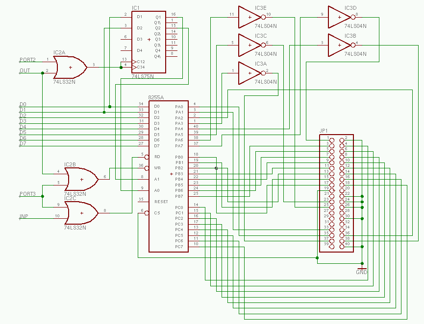

This circuit is utilized by selecting an 8255 port by writing port2 and then reading/writing the selected 8255 port on port 3. PB of the 8255 provides the low 8 bits to the IDE device, while PC provides the high 8 bits.
PA provides the control signals for the IDE bus as follows:
| Bit | Function | |
|---|---|---|
| 0 | IDE Bus A0 | |
| 1 | IDE Bus A1 | |
| 2 | IDE Bus A2 | |
| 3 | IDE Bus CS0 (inverted) | |
| 4 | IDE Bus CS1 (inverted) | |
| 5 | IDE Bus WR (inverted) | |
| 6 | IDE Bus RD (inverted) | |
| 7 | IDE Bus Reset (inverted) |
See the Port Extender schematic to see how Port2, Port3, Inp, and Out are derived
Note: This circuit is a work in progress and has not been tested in either real hardware or simulation
